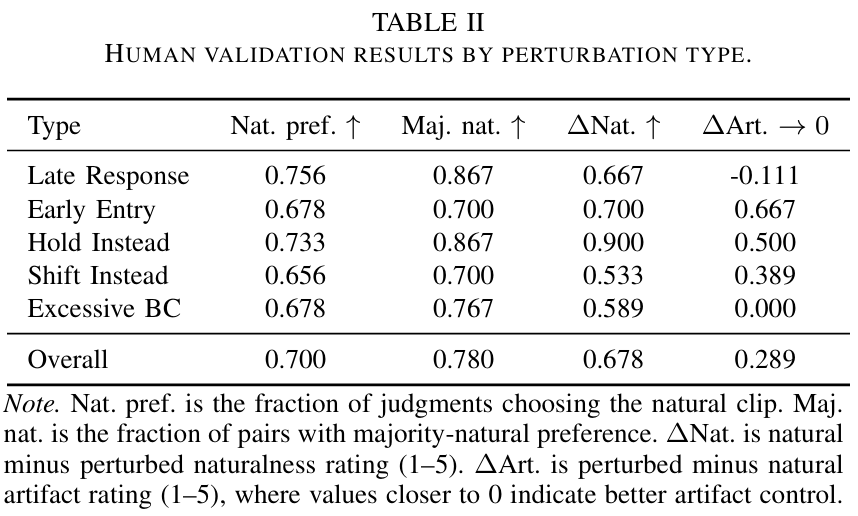
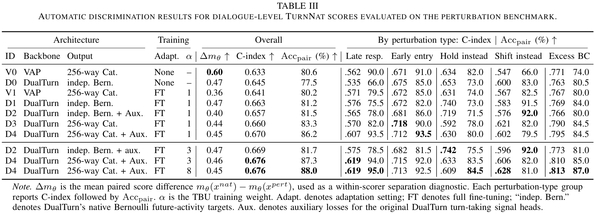
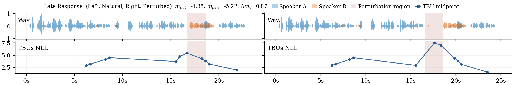
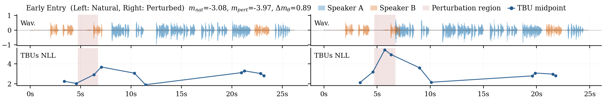
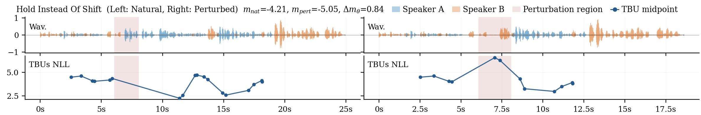
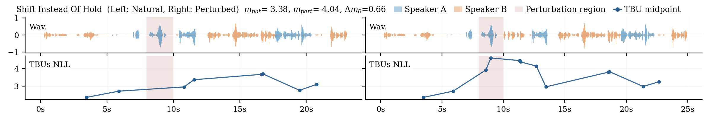
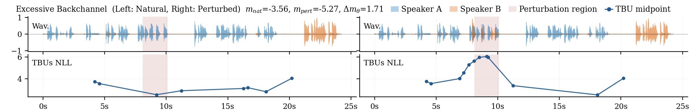

Human Validation Results

Table slot for natural preference rate, majority-natural preference, naturalness-rating difference, and artifact-rating difference by perturbation type.
TurnNat follows the future two-speaker voice-activity prediction formulation of Voice Activity Projection [1] and instantiates the scorer with VAP- and DualTurn-based predictors [2].

The perturbation benchmark is constructed from the naturalistic portion of Seamless Interaction [3]. Candidate regions are extracted with Silero VAD [4]. Late-response and early-entry perturbations are chosen relative to reported human response-timing ranges around -200 to 400 ms [6]; hold/shift cases follow the VAP shift/hold criterion [1]; and backchannels are identified using the transcript-based criterion of Wang et al. [5].

Table slot for natural preference rate, majority-natural preference, naturalness-rating difference, and artifact-rating difference by perturbation type.

Table slot for TurnNat variants, including VAP and DualTurn backbones, C-index, matched-pair accuracy, and per-perturbation-type results.
Each example pairs the original natural clip with a matched perturbation. The figure slot is reserved for the waveform, TBU-NLL, and perturbation-region visualization used in the paper.




